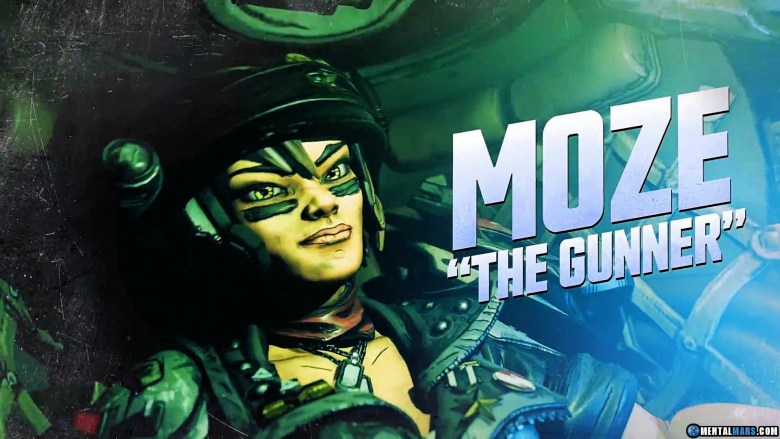
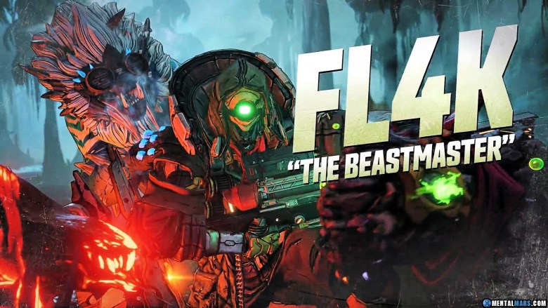
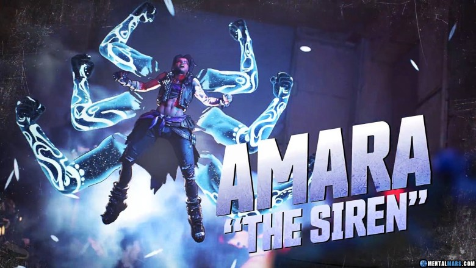

Borderlands 3 is an upcoming action role-playing first-person shooter video game that is the sequel to 2012's Borderlands 2, and the fourth main entry in the Borderlands series. Developed by Gearbox Software and published by 2K Games, Borderlands 3 is expected to be released on 13 September 2019 for Microsoft Windows, PlayStation 4 and Xbox One. A Google Stadia port has been confirmed for a later release date.
A barely-habitable rock that the Children of the Vault have made their homeworld. Pandora's searing-hot deserts, vicious wildlife, and burgeoning bandit population have proved too much for all who have tried to tame the planet and exploit its resources. The ruins of Dahl, Atlas, and Hyperion facilities litter the landscape, inhabited by all manner of Skags, Rakk, Varkids, and Spiderants that are intent on eating and killing you. Usually in that order.
A misty, tranquil planet that has recently attracted the wrong kind of attention. Athenas is mostly uninhabited, save for a sect of monks known as the Order of the Impending Storm who have made their home in the high peaks of the mountains. What secrets do they guard here, inside ancient walls that were built long before humans set foot on Athenas?
A backwater swampland of a planet, and family home of the Jakobs clan. Eden-6 is covered by lush greenery and stagnant waters, dotted with occasional settlements and the rusted hulks of crashed spaceships. Civilization has never fully taken hold here, and indigenous dangers including ravenous Saurians and semi-sentient Jabbers effectively rule the planet. As if you didn't already have enough to worry about, the Children of the Vault have a presence here as well.
Home to the Atlas corporation headquarters, Promethea is a metropolitan world covered in futuristic towers of chrome and glass. A recent siege by Maliwan has turned the urban environment into a warzone; their mechanized infantry patrol the streets, rodent/insect hybrids known as Ratches infest the sewers and back-alleys, and the Children of the Vault are seizing the opportunity to recruit displaced and disgruntled citizens. Atlas CEO Rhys Strongfork is getting desperate.
Zane the Operative is Borderlands 3’s resident tech expert, with an ingenious gadget at the ready for any life-or-death situation. Zane can equip two Action Skills at once, though choosing to do so will replace his ability to toss grenades. To help you decide if Zane is the right Vault Hunter for you, here’s a brief overview of his three skill trees: Doubled Agent, Hitman, and Under Cover. Will your Zane build be worthy of the Flynt family name?
Moze the Gunner always has backup in Borderlands 3 thanks to Iron Bear, her 15-ton bipedal mech that packs some heavy-duty firepower. This former Vladof soldier turned Vault Hunter offers a unique take on character builds: the multiple Action Skills that are part of Moze’s Shield of Retribution, Demolition Woman, and Bottomless Mags skill trees are actually weapons mounted onto each of Iron Bear’s arms, so you can mix and match Iron Bear’s loadout across multiple skill trees or even equip two of the same weapon if you’re all about symmetry. Here’s a breakdown of what Moze and Iron Bear are capable of when these inseparable BFFs spend their precious skill points.
FL4K is a wandering robot who always brings one of their three loyal pets into battle to buff stats and attack enemies. Their action skills let them send forth dive-bombing Rakk, teleport Gamma Burst-irradiated pets through rifts, and even Fade Away to temporarily become invisible while moving faster and regenerating health.
Amara the Siren is a well-renowned hero to the people, but Borderlands 3 is her chance to shine as a badass Vault Hunter. Using her supernatural Siren abilities, Amara pulverizes her enemies with astral projections, pounding them into a bloody pulp with fists formed from pure energy. We’re taking a top-level look at Amara’s three distinct skill trees—Fist of the Elements, Mystical Assault, and Brawl—to help you decide which build best suits your preferred playstyle. But no matter which way you go, Amara will absolutely bring the beatdowns.